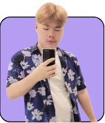

มัจฉานุแลนด์
ทำอาร์ตเวิร์กลงเพจ ดูแลเพจ ตอบแชตลูกค้า และถ่ายภาพกิจกรรมของผู้มาใช้บริการ
HELLO, THIS IS MY PORTFOLIO
สวัสดีครับ ผม วชิรวิทย์ เจิมรัตนรุ่งเรือง
นี่คือพื้นที่รวบรวมผลงานกราฟิก การดูแลเพจ และประสบการณ์
ที่ได้เรียนรู้จากการลงมือทำจริงของผม

01 / ABOUT ME
จากการเรียนคอมพิวเตอร์กราฟิก
สู่ประสบการณ์ออกแบบในที่ทำงานจริง
ผมมีพื้นฐานด้านคอมพิวเตอร์กราฟิก และเคยฝึกงานที่ The Salaya Leisure Park ได้ทำทั้งอาร์ตเวิร์กสำหรับโซเชียลมีเดีย ถ่ายภาพ ออกแบบสื่อประชาสัมพันธ์ และดูแลเพจ เป็นประสบการณ์ที่ทำให้ได้ฝึกทั้งความคิดสร้างสรรค์และการทำงานร่วมกับผู้อื่น
02 / SELECTED WORK
ตัวอย่างงานระหว่างฝึกงาน
จากไอเดีย สู่สื่อที่ได้ใช้งานจริง
ทำอาร์ตเวิร์กลงเพจ ดูแลเพจ ตอบแชตลูกค้า และถ่ายภาพกิจกรรมของผู้มาใช้บริการ
ออกแบบสื่อประชาสัมพันธ์และโปรโมชั่น ถ่ายภาพสำหรับโปรโมตเพจ และดูแลการสื่อสารกับลูกค้า
ทำอาร์ตเวิร์กโปรโมชั่น ถ่ายภาพโปรโมต และดูแลความเคลื่อนไหวของเพจร้านอาหารเกาหลี
ดูพอร์ตต้นฉบับใน Canva03 / EXPERIENCE
งานกราฟิกและดูแลสื่อโซเชียลมีเดีย
ได้ฝึกจัดสรรเวลา ตรวจสอบรายละเอียดของงาน
และสื่อสารกับทีมเพื่อให้งานเดินไปด้วยกัน
04 / GET IN TOUCH
ขอบคุณที่แวะมาชมพอร์ตโฟลิโอของผมครับ